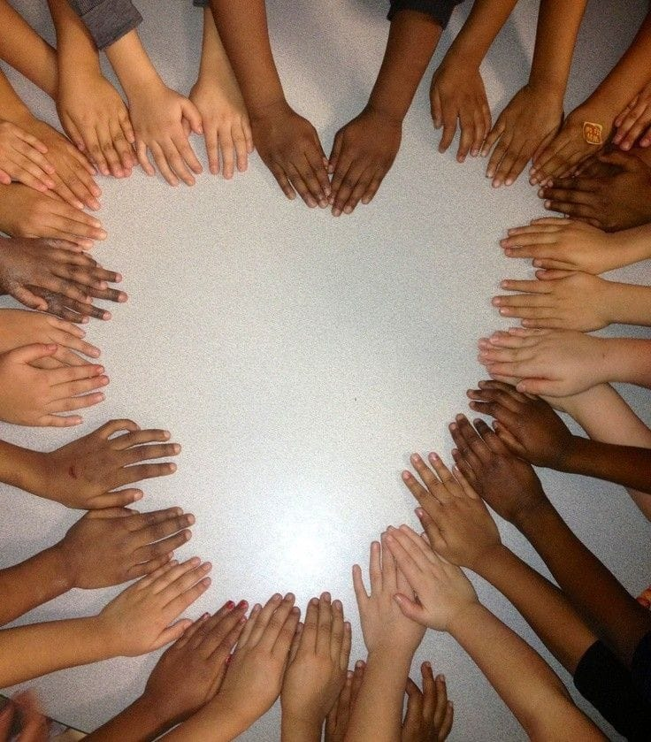

Como se deu inicio a este preconceito?
O preconceito é uma atitude cultural que combina crenças, juízos de valor e predisposições emocionais, é caracterizado pela generalização, pelo mau uso de estereótipos e emoções, e por discriminação, sendo resistente a novas informações que contradigam as crenças preconcebidas. Ele se manifesta de várias formas, incluindo preconceito racial, social, religioso, de gênero, entre outros. A origem do preconceito está em fatores históricos, culturais e sociais, sendo renovado pela socialização e os meios de comunicação que reforçam estereótipos e imagens distorcidas de grupos sociais. O preconceito pode ser combatido sempre mostrando a importância da educação, da conscientização e de políticas públicas inclusivas.
O preconceito é uma atitude cultural que combina crenças, juízos de valor e predisposições emocionais, é caracterizado pela generalização, pelo mau uso de estereótipos e emoções, e por discriminação, sendo resistente a novas informações que contradigam as crenças preconcebidas. Ele se manifesta de várias formas, incluindo preconceito racial, social, religioso, de gênero, entre outros. A origem do preconceito está em fatores históricos, culturais e sociais, sendo renovado pela socialização e os meios de comunicação que reforçam estereótipos e imagens distorcidas de grupos sociais. O preconceito pode ser combatido sempre mostrando a importância da educação, da conscientização e de políticas públicas inclusivas.
O que é o preconceito?
O preconceito é uma atitude cultural que combina crenças, juízos de valor e predisposições emocionais, é caracterizado pela generalização, pelo mau uso de estereótipos e emoções, e por discriminação, sendo resistente a novas informações que contradigam as crenças preconcebidas. Ele se manifesta de várias formas, incluindo preconceito racial, social, religioso, de gênero, entre outros. A origem do preconceito está em fatores históricos, culturais e sociais, sendo renovado pela socialização e os meios de comunicação que reforçam estereótipos e imagens distorcidas de grupos sociais. O preconceito pode ser combatido sempre mostrando a importância da educação, da conscientização e de políticas públicas inclusivas.
O preconceito é uma atitude cultural que combina crenças, juízos de valor e predisposições emocionais, é caracterizado pela generalização, pelo mau uso de estereótipos e emoções, e por discriminação, sendo resistente a novas informações que contradigam as crenças preconcebidas. Ele se manifesta de várias formas, incluindo preconceito racial, social, religioso, de gênero, entre outros. A origem do preconceito está em fatores históricos, culturais e sociais, sendo renovado pela socialização e os meios de comunicação que reforçam estereótipos e imagens distorcidas de grupos sociais. O preconceito pode ser combatido sempre mostrando a importância da educação, da conscientização e de políticas públicas inclusivas.
Como o preconceito atinge a vida das pessoas?
O preconceito é um fenômeno global que se manifesta de diversas formas em diferentes contextos culturais e sociais. Em muitos países, o preconceito racial é uma questão persistente, frequentemente enraizada em históricos de colonialismo, escravidão e segregação. Nos Estados Unidos, por exemplo, o racismo sistêmico continua a afetar comunidades afro-americanas, resultando em disparidades em áreas como justiça criminal, educação e saúde. Na Europa, a xenofobia e o preconceito contra imigrantes e refugiados têm aumentado, sendo exacerbados por crises econômicas e políticas de imigração restritivas. Em países asiáticos, preconceitos baseados em etnia e religião também são comuns, refletindo tensões históricas e políticas entre diferentes grupos étnicos e religiosos. Além do preconceito racial, outras formas de discriminação, como a de gênero, orientação sexual e religião, são prevalentes em todo o mundo. O machismo e a misoginia continuam a limitar as oportunidades e os direitos das mulheres em muitas socieda des, enquanto pessoas LGBTQIA+ enfrentam discriminação legal e social em vários países. A intolerância religiosa também é uma fonte significativa de conflito, com minorias religiosas frequentemente enfrentando perseguição e violência. Apesar desses desafios, movimentos sociais e organizações internacionais estão trabalhando para promover a igualdade e os Direitos Humanos, buscando combater o preconceito por meio da educação, da legislação e de políticas públicas. No entanto, a erradicação do preconceito requer esforços contínuos e coordenados, tanto em nível local quanto global, para promover uma cultura de respeito e inclusão.
O preconceito é um fenômeno global que se manifesta de diversas formas em diferentes contextos culturais e sociais. Em muitos países, o preconceito racial é uma questão persistente, frequentemente enraizada em históricos de colonialismo, escravidão e segregação. Nos Estados Unidos, por exemplo, o racismo sistêmico continua a afetar comunidades afro-americanas, resultando em disparidades em áreas como justiça criminal, educação e saúde. Na Europa, a xenofobia e o preconceito contra imigrantes e refugiados têm aumentado, sendo exacerbados por crises econômicas e políticas de imigração restritivas. Em países asiáticos, preconceitos baseados em etnia e religião também são comuns, refletindo tensões históricas e políticas entre diferentes grupos étnicos e religiosos. Além do preconceito racial, outras formas de discriminação, como a de gênero, orientação sexual e religião, são prevalentes em todo o mundo. O machismo e a misoginia continuam a limitar as oportunidades e os direitos das mulheres em muitas socieda des, enquanto pessoas LGBTQIA+ enfrentam discriminação legal e social em vários países. A intolerância religiosa também é uma fonte significativa de conflito, com minorias religiosas frequentemente enfrentando perseguição e violência. Apesar desses desafios, movimentos sociais e organizações internacionais estão trabalhando para promover a igualdade e os Direitos Humanos, buscando combater o preconceito por meio da educação, da legislação e de políticas públicas. No entanto, a erradicação do preconceito requer esforços contínuos e coordenados, tanto em nível local quanto global, para promover uma cultura de respeito e inclusão.

Como lidar com o preconceito?
Combater o preconceito requer uma abordagem multifacetada que envolve educação, conscientização e políticas públicas. A educação desempenha um papel crucial na desconstrução de estereótipos e na promoção da empatia. Instituições educacionais podem implementar currículos que incluam a história e a cultura de diversos grupos, promovendo a compreensão e o respeito pelas diferenças. Além disso, programas de treinamento em diversidade para professores e alunos podem ajudar a criar ambientes escolares inclusivos. Fora das escolas, campanhas de conscientização pública podem desafiar normas culturais prejudiciais e incentivar o diálogo aberto sobre preconceito e discriminação. Essas campanhas podem ser amplificadas por meio de parcerias com meios de comunicação, que têm o poder de moldar percepções e atitudes sociais. Além da educação e conscientização, é fundamental implementar e reforçar políticas públicas que promovam a igualdade e a inclusão. Os governos e organizações devem adotar medidas que garantam a igualdade de oportunidades em áreas como emprego, educação e saúde, combatendo a discriminação institucional. A aplicação rigorosa de leis antidiscriminatórias é essencial para proteger os direitos dos grupos marginalizados. Além disso, a promoção de espaços de diálogo e da participação comunitária pode empoderar indivíduos a desafiar o preconceito em suas comunidades. A combinação dessas estratégias pode criar uma sociedade mais justa e equitativa, em que a diversidade é valorizada e o preconceito é ativamente combatido.
Combater o preconceito requer uma abordagem multifacetada que envolve educação, conscientização e políticas públicas. A educação desempenha um papel crucial na desconstrução de estereótipos e na promoção da empatia. Instituições educacionais podem implementar currículos que incluam a história e a cultura de diversos grupos, promovendo a compreensão e o respeito pelas diferenças. Além disso, programas de treinamento em diversidade para professores e alunos podem ajudar a criar ambientes escolares inclusivos. Fora das escolas, campanhas de conscientização pública podem desafiar normas culturais prejudiciais e incentivar o diálogo aberto sobre preconceito e discriminação. Essas campanhas podem ser amplificadas por meio de parcerias com meios de comunicação, que têm o poder de moldar percepções e atitudes sociais. Além da educação e conscientização, é fundamental implementar e reforçar políticas públicas que promovam a igualdade e a inclusão. Os governos e organizações devem adotar medidas que garantam a igualdade de oportunidades em áreas como emprego, educação e saúde, combatendo a discriminação institucional. A aplicação rigorosa de leis antidiscriminatórias é essencial para proteger os direitos dos grupos marginalizados. Além disso, a promoção de espaços de diálogo e da participação comunitária pode empoderar indivíduos a desafiar o preconceito em suas comunidades. A combinação dessas estratégias pode criar uma sociedade mais justa e equitativa, em que a diversidade é valorizada e o preconceito é ativamente combatido.